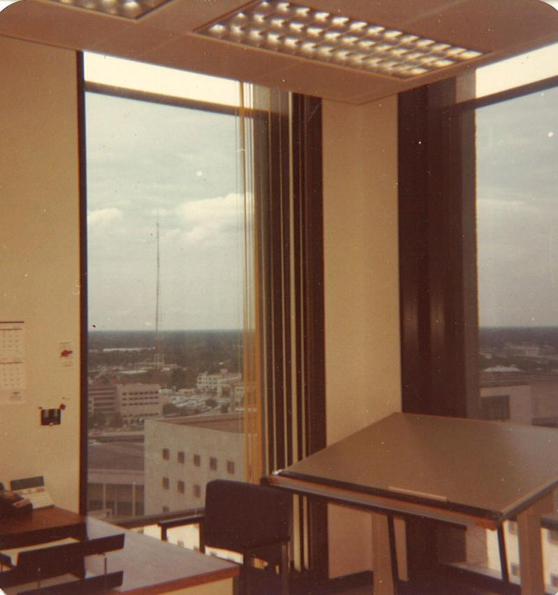

Martin Manley: My Life and Death
Born 8-15-53, Died 8-15-13 , Age 60
- Home Page
- January 1, 2012
- June 11, 2012
- Suicide Preface
- Why Suicide?
- Why not?
- Why Age 60?
- Self-Serving?
- Suicide - How 2
- Gun Control
- Other Suicides
- Other Quotes
- ------------------------------------
- Growing Up
- OMG: I look 60!
- Mom and Dad
- The Heavens
- My Religion
- Chancel Choir
- Victory O Lord
- The Proposal
- Two Marriages
- First Two Loves
- Pictures
- Trips and Travel
- Writing Fiction
- Music & Poetry
- Movies & TV
- Health
- Sleep Deprived
- Living Donor
- Food & Drink
- Creations
- Sports
- KC Star
- KC Tornado
- My IQ
- Synesthesia
- Poker
- Legal
- JOCO, Ks.
- U.S. Financial
- 911 & Conspiracies
- COOL STUFF
- Births & Deaths
HOUSTON 1990
I had lived in Houston for part of 1973, 74 and 75 and had loved the city. I had been back once in 1989 – the year before. I was invited to be on TBS’s pre NBA All-Star Game festivities and the game that year was in Houston. At the time, I had written two books on the NBA and Fred Hickman was a sportscaster for TBS. Hickman was in love with my first two books. He invited me down to appear on his show that Friday night before the Saturday and Sunday events.
I stayed with an old friend that I used to work with and the entire weekend went well. It was the first (and only) time I’ve appeared on national television. I still have the tape and put together a grouping of my television appearances (mostly local) on a DVD which I sent to a number of people just before I died.
But, back to 1990 – a year later. When I was there in 1989, I didn’t have time to go see any of the old sites, but it got my Houston blood flowing. So, the next year in March, my wife at the time, Chris, and I went to Houston for vacation.
It’s not your typical destination spot for a vacation, but I thought I would show her where I lived, go to a Rockets’ game, head down to Galveston, go by Johnson Space center, etc. We did all that. However, we did one thing we should never have done and it always remained at least tied for the worst time of my life.
I really didn’t realize what I was getting into when I booked a fishing trip. I had seen the full-color glossy photos of the guy reeling in a Marlin on a beautiful day with blue skies and calm waters. That’s what I wanted to do.
So, we decided to go on a fishing trip in the Gulf of Mexico from Galveston. The boat held about 20 people and was not much more than a floating bus. It was a cool and overcast day – temperatures about 55. That was bad enough, but the misery stemmed from the fact that neither Chris or I had ever been in the open ocean and as soon as the boat got out beyond the breakers, the sea got rough and Chris got sick. It only took me about another 10-15 minutes before I got sick as well.
Here’s the stupid part. I could have booked a four-hour or eight-hour trip. Guess which one I went with. For seven hours, we were both sicker than dogs, barfing what biscuits we had. We didn’t know we should have taken Dramamine before the trip. We knew nothing – just blue skies and Marlins.
At one point, the boat pulled up next to some kind of platform in the gulf – undoubtedly used for oil at one time. It was a flat metal slab that was roughly 50’ x 50’. It was mounted somehow to the ocean floor. Apparently, fish liked to swim around it, so that’s where they stopped.
The thing I noticed instantly was that it was not moving! I wanted to be on that platform more than you can imagine. I went up to the captain and offered him $100 to let me off. He could pick me up on the way back. He, of course, told me I was out of my mind. Can you imagine letting off a passenger on a 50’x50’ platform in the Gulf of Mexico and leaving him? Talk about lawsuits. Nevertheless, that non-moving platform looked like Heaven to me. I’m not sure what I thought with respect to Chris at the time I made him the offer, but I was too sick to be thinking clearly.
We eventually got back to land and went to the hotel. It took hours to start feeling normal – like my head wasn’t sloshing around. We spent a lot of money for the fishing trip and never even touched a pole. Just the thought of the smell of the fish and bait made me queasy for weeks.
Still, the trip overall was good and it was great to see Houston after 15 years. Although it was still a relatively young and relatively rich city, you could see it was beginning show problems. By 2013, I suspect it’s like many cities – very nice the farther away from downtown you get, but the city inside the loop – roughly 15 miles by 15 miles is more poor and certainly has its share of crime.

This was a picture (left) of the north part of Houston's downtown in 1974. It's too bad the colors aren't what they were then, but the picture has faded after 39 years. It was a beautiful place. The building I worked in (Houston Lighting and Power - now Reliant Energy) is just to the left of this picture. The picture on the right is my office which was on the NW corner of the 15th floor. The building was on the NW corner of downtown and, to this day, that office still has an unobstructed view of the west and north parts of Houston.
Copyright 2013 Martin Manley Life and Death. All rights reserved.